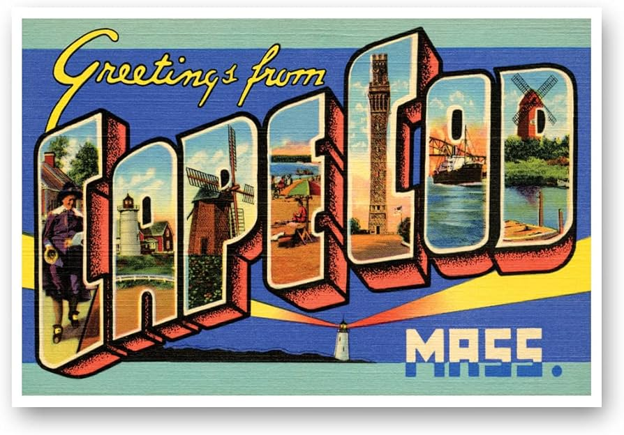

First SettlersTourismEconomic GrowthBefore the first Europeens arrived in what is known today as Cape Cod, the Wampanoag tribe inhabited the area. They lived primarily off of fishing and gathering. 1620 was when the first English sttlers arrived.After it was colonized, the Cape Cod economy boomed due to fishing commerce. Then of course, many years later, after becoming a famous vacation spot, its economy only improved. Cape Cod became a summer haven for city dwellers beginning at the end of the 19th century. Rail transportation improved, making the towns of the Upper Cape accessible to many more people. Over the years, Cape Cod grew in popularity as people fell in love with its uniqueness.
